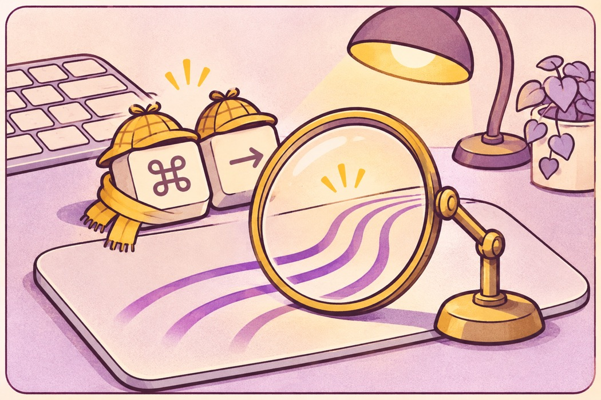

Open source for macOS
Make more of your Mac trackpad.
Switch tabs, middle click, and run your own shortcuts with simple trackpad gestures.
Apple Silicon MacBook · Built-in trackpad · macOS 27.2 or later
Default mappings
Four gestures to start.
Change any action or turn individual gestures off in MacClick Settings.
- Three-finger tap or click
- Middle click
- Three-finger swipe right
- Ctrl + Tab
- Three-finger swipe left
- Ctrl + Shift + Tab
- Four-finger tap or click
- ⌘ + W
Setup guide
Your first run.
The app is currently in English only.
- 1. Install
- Unzip the download and move MacClick.app to Applications.
- 2. Open
- If blocked, choose Open Anyway in Privacy & Security.
- 3. Grant access
- In Device Control and Data Access, turn on MacClick. Add it with + if missing.
- 4. Restart
- Quit MacClick and reopen it from Applications.

Why I built MacClick
I wanted more from the gestures built into macOS, especially when browsing. I kept reaching for ways to switch tabs, open links with a middle click, and close tabs without leaving the trackpad. Paid tools already cover those needs. I wanted to build a small alternative with AI and share it as open source.
Have a gesture you use all the time? Suggest it on GitHub and I can look at adding it. You can also add it yourself and open a pull request.